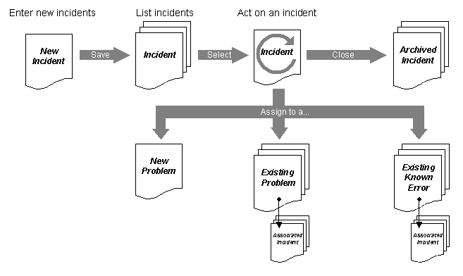

The following illustration shows the basic workflow in the application:

Each Incident is stored in the CMDB as an Instance (an object, just like a CI). Each Incident has an attribute named Status, with the following possible values; New, Open, Problem, Known Error or Closed. It is the Status value that determines how the Incident is treated in the application.
All new incidents automatically gets status New. When a user (typically a helpdesk or support person) has opened the incident and done something with it, status changes to Open. Status remains Open as long as the helpdesk personnel is working with the incident. During work with an incident the helpdesk personnel can document actions taken with Action Notes (comments). The Action Notes are stored in the CMDB and referenced from the corresponding Problem. They can be viewed as an Action History.
If an incident is resolved it can be closed and archived (status changes to Closed).
If the incident can not be resolved and is likely to be caused by a problem in the data center, it can be associated with (linked to) an existing Problem in the CMDB. At this point the incident´s status changes to Problem. The Incident Application can also issue a New Problem, which is stored in teh CMDB, and associate the incident with it. This is typically done when a new (unknown) problem is encountered.
In a similar way can an incident be associated with a Known Error in the CMDB. The incident´s status now changes to Known Error. Problems and Known Errors are managed in the Problem Management Application.